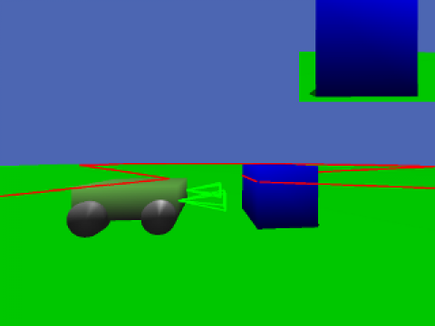

CycabTK Simulator & RobotML generator
PROTEUS Research Camp - Feb 2013
<HTML5> presentation realized with deck.js
Presentation Overview
Plan
Presentation Overview
- CycabTK Simulator presentation
- Description
- Features
- Ros interfaces
- scripting
- Getting Started with CycabTKSimulator
- Installation
- Configuration
- Edit scene
- Launch simulation
- RobotML Generator
- Supported features
- Generated files
- Demonstration

CycabTK Simulator presentation
Description
Brief history
Historically
- CycabTK was a robotic toolkit dedicated for the Cycab autonomous vehicle
- Contained a basic 2D simulator to move a virtual cycab and simulate a laser scanner
- Used a shared-memory based middleware
Now
- We use ROS → private middleware and associated sensor drivers no more relevant
- CycabTK Simulator : generic mobile robot simulator with 3D and physics engine
Graphics engine
Based on mgEngine : http://mgengine.sourceforge.net
- Open source 3D engine
- Simulation oriented
- Modular
- Scriptable (mgscripts & lua)
Physics engine
Features
Features
Available simulated components
- Differential and car-like vehicle
- With dynamics
- Simulated low level speed control
- Odometry (perfect and with sliding)
- Cameras
- Multilayers LIDAR and range sensors
- GPS
- IMU
ROS interfaces
ROS interfaces
CycabTK is Integrated with ROS
- CycabTK = ROS package
- Uses ROS build system
- Provides simulated robots & sensors interfaces to ROS topics
Scripting
Scripting
Two methods to create a simulation scene in mgEngine :
- Native mgEngine script language
- Easy way to add simulated object & configure the engine
- Limited : no logics, no objects, etc.
- Use Lua interpreter module :
- Very light and powerfull language
- Lua bindings for almost all mgEngine & CycabTKSimulator modules
- Configured as the default interpreter by CycabTKSimulator
- Can use luaBind class architecture
We focused on the second solution
Getting started
Plan
- CycabTK Simulator presentation
- Description
- Features
- Ros interfaces
- Scripting
- Getting Started with CycabTKSimulator
- Installation
- Configuration
- Edit scene
- Launch simulation
- RobotML Generator
- Supported features
- Generated files
- Demonstration
Installation
Installation
- Install ROS :
- Install CycabTKSimulator :
- Using PROTEUS repository :
$ apt-get install cycabtksimulator - Using source code :
- Dowload and decompress latest archive : https://gforge.inria.fr/frs/?group_id=42
- Add the path to ROS_PACKAGE_PATH environment variable
- Compile with rosmake :
$ rosmake CycabTKSimulator
- Using PROTEUS repository :
- Test :
$ roslaunch CycabTKSimulator cycabtk_tutorial.launch
Configuration
Configuration
- MgEngine requires configuration files to find ressources
- Typycal configuration file :
[data path] "/path/to/the/scene/"
[material path] "$(material path);$(data path)materials"
[mesh path] "$(mesh path);$(data path)meshes"
[texture path] "$(texture path);$(data path)textures"
[script path] "$(script path);$(data path)scripts"
[configuration path] "$(configuration path);$(data path)conf"
[lua path] "$(lua path);$(data path)scripts/?.lua"
[input config file] "$(data path)input.conf"Edit scene
Edit scene
A simulation scene = Lua script
require "mgLuaCameraViewport"
require "mgLuaAccurateRenderer"
require "LuaCycabTK"
require "LuaStdPhysicsEngine"
require "LuaCollisionMesh"
---- Renderer
renderer = mge.AccurateRenderer "renderer"
---- Camera view
cam = mge.Camera "cam"
viewport = mge.CameraViewport "viewport"
viewport.Camera = cam
-- Physics Engine
phyEng = cycabtk.StdPhysicsEngine "phyEng"
-- Environment
ground = mge.MeshActor "ground"
ground:SetMesh "ground.mesh"
phyGround = cycabtk.CollisionMesh "phyGround"
--Light
sun = mge.LightSource "sun"
sun:SetLocalPosition (-10, -10, 100)
-- robot
require "tutorial/SimpleVehicle"
robot = SimpleVehicle "robot"
robot:SetPosition(-5,0,0.5)Using classes
Object programming with Luabind classes
require "LuaCycabTK"
require "LuaDynamicCar"
--Definition of class SimpleVehicle
class 'SimpleVehicle' (cycabtk.DynamicCar)
function SimpleVehicle:__init(name)
cycabtk.DynamicCar.__init(self, name)
self:SetVehicleConfiguration "tutorial/SimpleVehicle.xml"
---- initialize mesh actors ----
self.chassis = mge.MeshActor( name..".chassis" )
self.chassis:SetMesh "tutorial/chassis.mesh"
self:AttachTo( name..".chassis" )
self:SetPhysicMesh("tutorial/chassis.mesh", true);
--...
self:Start()
endROS Interfaces
ROS Interfaces = Pre/Post processor modules
require "LuaGroundVehicleOdometryRosInterface"
odometry_ros = cycabtk.GroundVehicleOdometryRosInterface("odometry_ros")
odometry_ros:SetTopicName("/odom")
robot:AddPostProcessing("odometry_ros")
require "LuaInputCycabControllerRosInterface"
controller_ros = cycabtk.InputCycabControllerRosInterface("controller_ros")
controller_ros:SetTopicName("/cmd_vel")
robot:AddPreProcessing("controller_ros")Launch
Launch
- Command line :
$ [rlwrap] rosrun CycabTKSimulator cycabtksimulator -f [configuration file] -l [lua script] - Using ros launch file:
<launch> <node pkg="CycabTKSimulator" type="cycabtk_simulator" name="Simulator" args="-f configuration_file -l script.lua" output="screen" launch-prefix="rlwrap" > </node> </launch>$ roslaunch launch_file.launch
RobotML CycabTK Generator
Plan
- CycabTK Simulator presentation
- Description
- Features
- Ros interfaces
- Scripting
- Getting Started with CycabTKSimulator
- Installation
- Configuration
- Edit scene
- Launch simulation
- RobotML Generator
- Supported features
- Generated files
- Demonstration
Supported concepts
Supported concepts
- Robotics Architecture
- Robot : Car-like / Differential
- LidarSystem
- CameraSystem
- GPSSystem
- IMU
- RoboticsSystem
- Robotics Communication
- Generate ROS interface for supported messages only
- Don't generate messages & communication protocol
- Deployment
- Generate components defined to cycabTK platform only
- Native components are only instanciated (don't generate class)
Generated files
Generated files
| scripts/model/component.lua | Component definition |
| scripts/model.lua | Main script
|
| model.conf | Configuration file |
| model.launch | Launch file to start the simulation |
Demonstration
Plan
- CycabTK Simulator presentation
- Description
- Features
- Ros interfaces
- Scripting
- Getting Started with CycabTKSimulator
- Installation
- Configuration
- Edit scene
- Launch simulation
- RobotML Generator
- Supported features
- Generated files
- Demonstration
Demonstration
Questions
| Amaury Negre | PROTEUS Research camp, CycabTK Simulator | Feb 14, 2013 / |
Note: